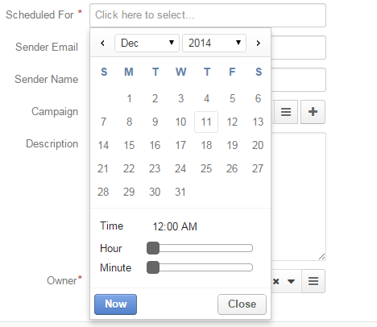
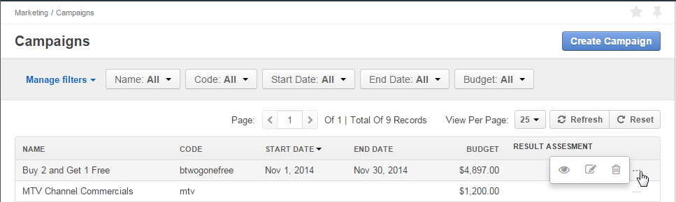

With Email Campaigns in Oro application, you can send an email with birthday wishes and a special offer to all of your loyal customers who were born in June or deliver a compliment to every customer who has purchased from you since April.
Before you start using Email campaigns, prepare your contact sources (e.g. a marketing list) and create an Email Template.
After that, you can easily set-up an Email Campaign, within which all the contacts on the list will receive personalized emails.
This article describes how to set up an Email Campaign in Oro application and manage it.
To create a new email campaign:
Navigate to Marketing > Email Campaigns in the main menu.
Click Create Email Campaign in the top right corner to get to the Create Email Campaign page.
In the General section, provide the following information:
| Name | Description |
|---|---|
| Name* | Name used to refer to the campaign in the system. |
| Marketing List* | Choose one of available marketing lists. The letter will be sent to email addresses defined by the list. More details about the marketing lists are available in the Marketing Lists guide. |
| Schedule* | Defines whether the mailing shall be activated manually (Manual) or scheduled for a specific date (Deferred). If Deferred is chosen, the Scheduled For field will appear. Choose the date and time of the mailing in the calendar.  |
| Owner* | Limits the list of users that can manage the campaign to those, whose roles allow managing email campaigns of the owner (e.g. the owner, members of the same business unit, system administrator, etc.). |
| Sender Email | Optional. |
| Sender Name | Optional. |
| Campaign | Optional. A Marketing Campaign this email campaign is a part of. |
| Description | Optional. |
Note
Custom fields may be added, subject to specific business needs.
In the Mailing Settings section, select the transport and the email template to use for the email campaign.
| Name | Description |
|---|---|
| Transport | The field defines the service to be used for the mailing. Out of the box, the only option is Oro application. Other services can be added in the course of customization. |
| Template | Choose the email template to be used from the drop-down. Note You can only see the templates assigned to no entity or the same entity as the marketing list |
Once you finish configuring the marketing campaign, click Save and Close in the top right corner of the page.
If you want to include one or several email campaign(s) to an Oro Application Marketing Campaign, choose the Marketing Campaign name in the Campaign list.
Multiple email campaigns may be assigned to a marketing campaign.
The following actions are available for an email campaign from the grid:
To launch an email campaign:
This generates an email based on the template you’ve selected, populates it with the contact’s details and sends it to the email from the contact information.
Note
If an Email Campaign has been created as a result of integration with MailChimp or dotmailer, its record will be automatically created in Oro application, and related statistics will be uploaded and synchronized.
Related Topics on Marketing Automation